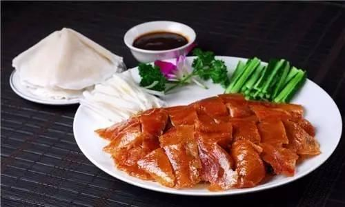
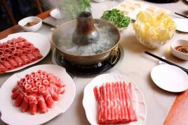
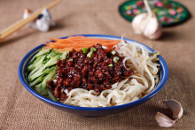

北京烤鸭：烤鸭是具有世界声誉的北京著名菜式，起源于中国南北朝时期，《食珍录》中已记有炙鸭，在当时是宫廷食品。用料为优质肉食鸭北京鸭，果木炭火烤制，色泽红润，肉质肥而不腻，外脆里嫩。北京烤鸭分为两大流派，而北京最著名的烤鸭店也即是两派的代表。它以色泽红艳，肉质细嫩，味道醇厚，肥而不腻的特色，被誉为“天下美味”。
涮羊肉：在北京，提起“涮羊肉”，尽人皆知。因为这道佳肴吃法简便、味道鲜美，所以深受欢迎。又因老北京用铜锅烹饪羊肉为主固亦称”吃锅子“”涮大羊“。
炸酱面：炸酱面是北京富有特色的食物，由菜码、炸酱拌面条而成。将黄瓜、香椿、豆芽、青豆、黄豆切好或煮好，做成菜码备用。然后做炸酱，将肉丁及葱姜等放在油里炒，再加入黄豆制作的黄酱或甜面酱炸炒，即成炸酱。面条煮熟后，捞出，浇上炸酱，拌以菜码，即成炸酱面。